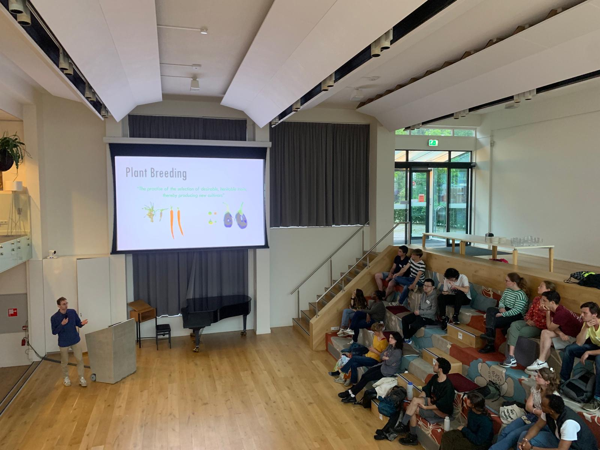
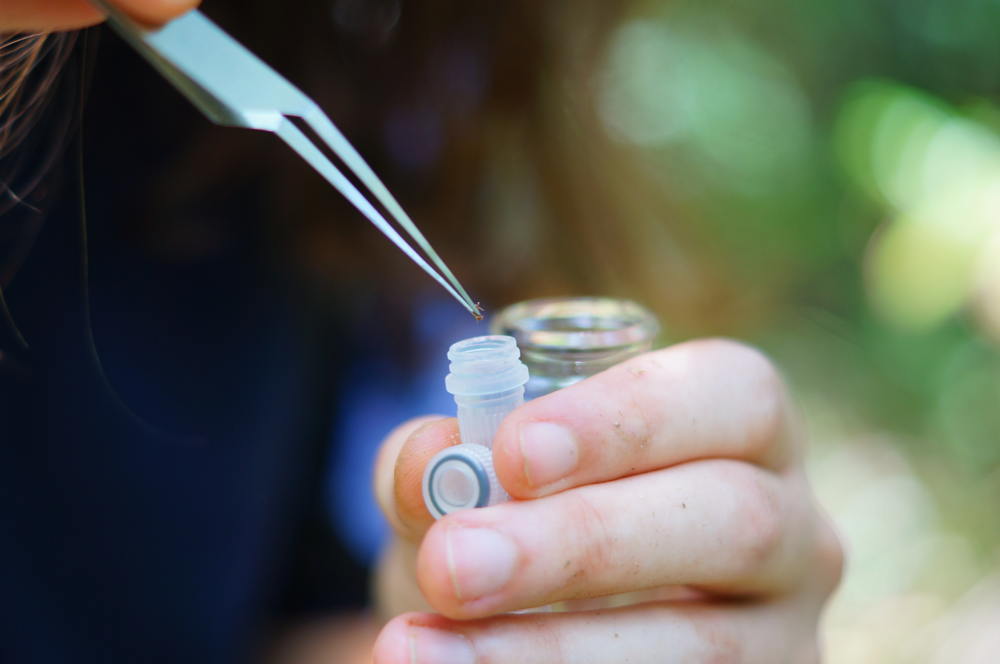
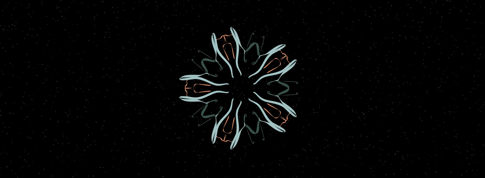
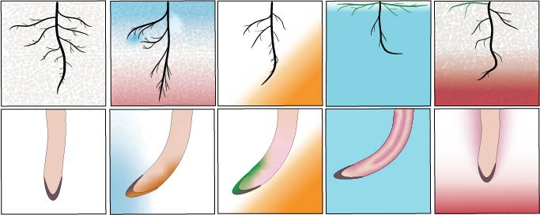

Research
Plant physiology, genetics, and virology. Lab work and computational analyses.
Plant Science • Photography • SciComm • Creative Coding • Sports
Available for work
Welcome to my small corner of the world wide web! :)
I really enjoy exploring plant science, science communication, documentary making, photography, creative projects, and sports! This website serves as a way to share adventures, a personal portfolio, a blog, and a casual alternative to LinkedIn.
I'm currently looking for a job where I can put my creative and analytical mindset to use for the greater good of biodiversity and agriculture. If you know of an opportunity, feel free to reach out below!
What I do
Plant physiology, genetics, and virology. Lab work and computational analyses.
Creative documentation of natural phenomena and street photography.
Translating complex biology into compelling stories for diverse audiences.
Volunteer coaching in climbing, tennis, badminton, and squash.
Generative visual art projects for exhibitions and installations.
Passionate about learning and teaching languages.
Portfolio

In 2016 I founded a non-profit organization, called GeneSprout Initiative, to enable an open dialogue about genetic editing (New Breeding Techniques). This included teaching, making educational material, hosting and leading diologue sessions, and building a website.
View more sci-comm projects →
I documented the process of a collection mission of rare endemic ant species in Okinawa. Together witha fellow researcher, we found Cryptopone species, which was exciting!
View more documentation and photography projects →
This year I coded an interactive generative art project in which people can interactively generate their own virus-like particle. It was exhibited at a Science X Art exposition for attendees to interact and learn with (about viruses).
Learn more about my art projects →
During my PhD trajectory I had the opportunity to write a scientific review. In this review, I was responsible for writing about how roots respond and/or adapt to drought, salinity and flooding stress.
View more research works →Recent Stories
About me
I'm Damian, a plant scientist and visual artist. With a background in plant science and a passion for photography, I enjoy both science and art to tell stories about the natural world.
I believe that understanding plants is key to protecting our planet. Through research and visual storytelling, I aim to contribute to making biodiversity accessible and inspiring.
In my free time you'll find me doing sports, exploring forests or picking up a creative project or language.
Known for ...
Get in touch
I'm open to work: research collaborations, visual storytelling projects, and frontend missions. Let's bring ideas to life that benefit the planet and the people; together!